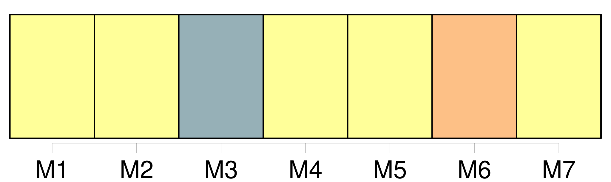
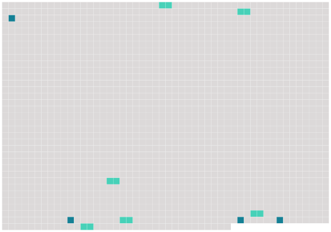

Longueur nb maillons : 10 mentions |
  |
L'administration provisoire des enfans restera au mari demandeur ou défendeur en divorce, à moins qu'il n'en soit autrement ordonné par [le tribunal] , sur la demande soit de la mère, soit de la famille, ou du commissaire du Gouvernement, pour le plus grand avantage des enfans. [2 phrases]
[Le tribunal] indiquera la maison dans laquelle la femme sera tenue de résider, et [fixera] , s'il y a lieu, la provision alimentaire que le mari sera obligé de lui payer. [50 phrases]
Après que le juge et les assistans auront fait leurs observations aux époux, s'ils persévèrent, il leur sera donné acte de leur réquisition, et de la remise par eux faite des pièces à l'appui le greffier [du tribunal] dressera procès-verbal, qui sera signé tant par les parties ( à moins qu'elles ne déclarent ne savoir ou ne pouvoir signer auquel cas il en sera fait mention ), que par les quatre assistans, le juge et le greffier. [5 phrases] [Le tribunal] , sur le référé, ne pourra faire d'autres vérifications que celles indiquées par l'article précédent.
S' [il] en résulte que, dans l'opinion [du tribunal] , les parties ont satisfait aux conditions et rempli les formalités déterminées par la loi, [il] admettra le divorce, et [renverra] les parties devant l'officier de l'état civil, pour le faire prononcer dans le cas contraire, [le tribunal] déclarera qu'il n'y a pas lieu à admettre le divorce, et déduira les motifs de la décision. |
 |
La ressource peut être téléchargée sur la page Ortolang
Si vous avez des questions ou vous voyez des erreurs, merci d'envoyer un mail à silvia.federzoni89@gmail.com
Site développé par S. Federzoni (contact)